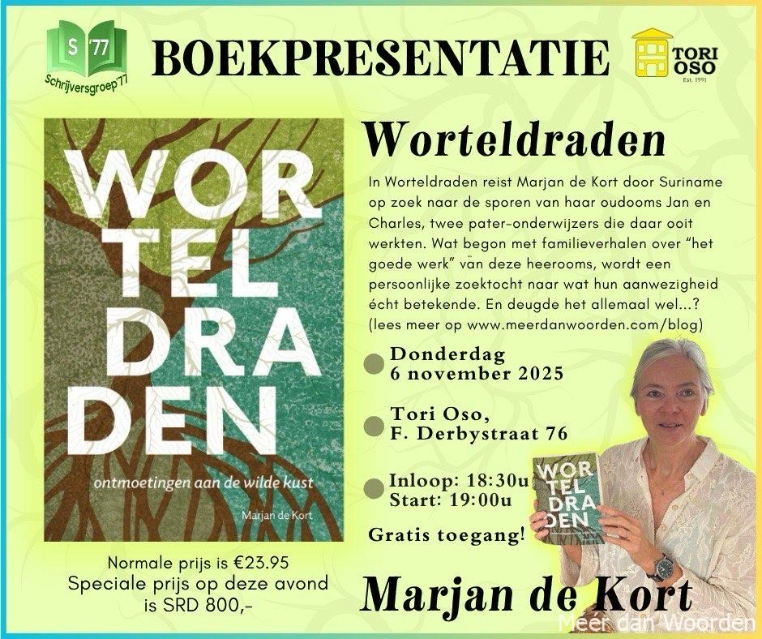

Bij Paris Books verschijnt het opmerkelijke boek Worteldraden van Marjan de Kort, over een stukje onbekende geschiedenis uit Suriname. Een interviewtje…
Wat was de aanleiding om Worteldraden te schrijven?
Aanvankelijk wilde ik vooral de zoons van mijn overleden broer de Surinaamse familiegeschiedenis van de heerooms De Kort meegeven én tegelijkertijd de gevolgen van de lastige geschiedenis die Nederland en Suriname delen. Maar de vele indrukken en bijzondere ontmoetingen in Suriname bleven me maar bezig houden. Telkens moest ik denken aan het feit dat we in Nederland eigenlijk maar weinig weten van Suriname en dat misschien ook niet per se hoeven. Andersom al evenmin trouwens. Alsof de geschiedenis die we delen tussen ons in staat. We lijken wel bang voor elkaar of boos, of op zijn minst voorzichtig. Dat wil ik doorbreken, want juist door elkaar persoonlijk te ontmoeten en met elkaar te praten, ontstaat er toenadering, leer je elkaar kennen en respecteren. Daar begint begrip en valt weerstand weg. Bovendien is Suriname een schitterend land, ook dat wil ik vertellen.
Jouw onderzoek vroeg ook een kritisch onderzoek naar je eigen familie?
Ja juist. Daar was ik ook best bang voor. Wat zou ik tegenkomen? Deugde het allemaal wel wat de broers van opa daar hebben gedaan als pater-onderwijzer? Er zijn immers wel vaker mensen ingehaald door de geschiedenis en van hun voetstuk gevallen. Al die verhalen van misbruik in de kerk… En waarom moesten ze er überhaupt zonodig het geloof gaan brengen, de Surinamers hadden toch zeker hun eigen geloof?
In de archieven kwam ik vooral kronieken tegen met voorbeelden van “goede werken” die ik voor een deel al kende uit de familieverhalen. Maar ik wilde van de Surinamers zelf horen wat zij van mijn heerooms vonden, wat zij met hen hadden meegemaakt. Hoe waren ze als mens? Ik kon bovendien niet al te lang meer wachten, wilde ik nog verhalen uit de eerste hand kunnen horen. Zo besloot ik in 2014 eindelijk waar te maken wat ik als kind al riep wanneer er weer eens nieuws was uit Suriname: ‘Later als ik groot ben, ga ik daar zelf kijken.’
Wat is de meest schokkende ontdekking die je deed? Wil je op deze manier het familiekarma inlossen?
Nou, dat viel uiteindelijk reuze mee, gelukkig. Iedereen die ik sprak, vertelde los van elkaar dat pater Charles een vriendelijk, bescheiden man was die van het weinige dat hij had nog deelde. Ze noemden hem ‘De Vliegende Hollander’ omdat hij in soutane op zijn motor door de binnenlanden scheurde. Maar iedereen vertelde ook dat zijn broer, pater Jan, behoorlijk streng was en dat je van hem nog wel eens een tik op de vingers kreeg of straf. Hij was enorm gedreven en dogmatisch. Daarom waren ze soms boos op hem of ze pestten hem en lachten hem uit. Dat herkende ik trouwens, mijn vader was net zo. Hij wilde ook altijd leiden en de lat lag hoog, zozeer dat hij vaak niet door had dat mensen hem dominant vonden, een heerser. Maar tegelijkertijd waren pater Jans intenties goed en waardeerden ze wat hij allemaal deed om hun leven beter te maken. ‘Hij heeft zich dood gewerkt voor ons’ kreeg ik regelmatig te horen.
Oftewel, langzaam maar zeker veranderden mijn scepsis en twijfel in waardering voor de manier waarop mijn heerooms in het leven stonden en hoe ze met mensen omgingen. Open, respectvol en gelijkwaardig!
Wat vinden Surinamers ervan dat er opnieuw een blanke over hén schrijft?
Dat weet ik nog niet. Eind oktober, begin november ga ik mijn boek presenteren in Suriname. Als eerste daar, om hun als het ware de verhalen die ze met mij deelden terug te geven.
Voor de vorm heb ik trouwens bewust de verhalenbundel gekozen in een combinatie van fictie en non-fictie. Als roman zou het teveel mijn verhaal worden en ik wilde overeind houden dat het hun verhalen zijn, van de mensen die ik ontmoette.
Wel heb ik alle gebeurtenissen en personages door elkaar gehusseld en mensen fictieve namen gegeven. Dit uit respect voor hun levensverhaal en hun privacy. Toen ik hen ontmoette wist ik immers nog niet dat ik een boek zou gaan schrijven, dus ik had ook niemand om toestemming gevraagd. Vijf jaar nadien alsnog toestemming vragen bleek bovendien lastig, want niet iedereen kon ik meer terugvinden, anderen waren destijds al ver in de negentig en leefden misschien wel niet meer.
Kortom, ik ben benieuwd wat ze ervan zullen vinden, ik hoop dat ze het kunnen waarderen. Ik vind het nu opnieuw spannend om naar Suriname te gaan!
Hoe ga je het boek vieren?
Met drie boekpresentaties in Suriname. Bij het Kerkelijk Museum van het bisdom, de Schrijversgroep en de bibliotheek van de Anton de Kom Universiteit. Het is werkelijk hartverwarmend dat ik overal zo welkom ben. Zeker in aanloop naar 25 november 2025, de viering van 50 jaar onafhankelijkheid van Nederland!
En bij de eerste boekpresentatie in Nederland (21 november) vier ik het met Floris en Bas, mijn twee eregasten, de zoons van mijn overleden broer. Ter nagedachtenis aan hun vader, hun opa en hun heerooms; wortels en vruchten aan dezelfde boom.
Worteldraden is overal te koop en ook via: https://partner.bol.com/click/click?p=2&t=url&s=47432&f=TXL&url=https%3A%2F%2Fwww.bol.com%2Fnl%2Fnl%2Fp%2Fworteldraden%2F9300000239068153%2F&name=Worteldraden%2C%20Marjan%20de%20Kort
